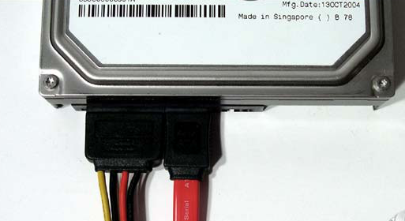

Brancher les composants à l'alimentation
Brancher les disques durs et les lecteurs optiques
Si vous en êtes ici c'est que vos composants sont en place. Vos disques durs sont déjà fixés et connectés à la carte mère mais vous avez remarqué que toutes les prises ne sont pas branchées… Vous avez l’œil, il faut encore les alimenter !
Votre alimentation est remplie de câbles encore inutilisé et ce n'est pas pour rien.
Vous vous souvenez du disque dur que nous avons brancher à l'étape précédente ? Mais si, je vous avez même montré cette image :

Ça vous reviens c'est bon ? Ce petit câble à gauche n'est autre qu'un SATA, mais pour l'alimentation. Ces câbles partent de l'alimentation et il suffira de venir de les brancher à vos disques et à votre lecteur optique (si vous en avez un).
Brancher les ventilateurs du boîtier
Parce que vous avez déjà un four à la maison, vous n'avez pas envie que votre PC chauffe un peu trop ! Heureusement tout bon boîtier est ventilé. Étape très simple, il suffit de brancher les prises mâles partant de chaque ventilateur vers les prises femelles de votre carte mère nommées "Fan 1" ou "SYSFan 1", "Fan 2" etc... Opération simple mais faites attention à bien laissé la ou les prises "CPU Fan" pour le ventirad/watercooling du processeur.Ci-dessous un exemple de carte mère, où j'ai entouré en rouge les "CPU Fan" et en vert les "SYS Fan". Vous pouvez cliquer sur l'image pour voir en plus grand.
{kind=link}
Brancher l'USB façade, le bouton power...
Dernière chose encore non branché à ce stade de votre montage. Les contrôleurs/vues du boitier sur la carte mère : bouton power, bouton reset, led d'activité... Et biensûr l'USB façade. Le branchement de l'USB ne sera pas compliquer… Cependant pour le reste il faudra vous référer au manuel de votre carte mère, afin de savoir comment brancher les pins et dans quel sens.Encore un effort, vous y êtes presque !
Etape suivante